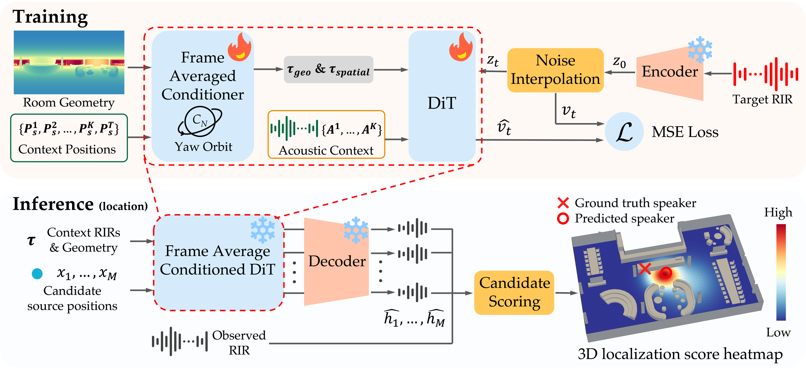
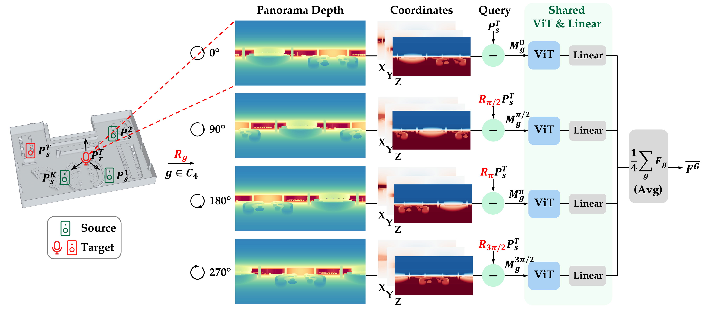
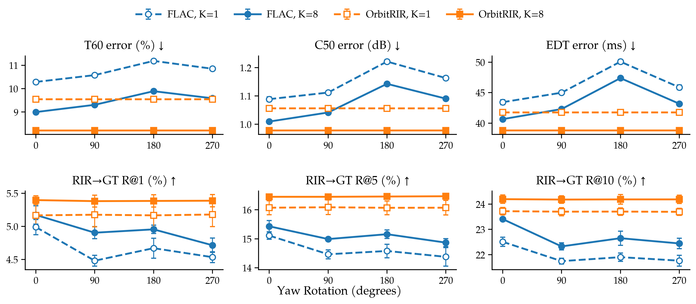

Condition on the room
A panoramic depth map, source coordinates, and sparse acoustic context describe the scene. A latent flow-matching model generates plausible RIRs for a queried source position.
NeurIPS 2026 · ESR Workshop
A geometry-conditioned generative model that uses forward acoustic knowledge to solve inverse 3D sound source localization problems.
Princeton University
Room impulse responses (RIRs) capture how sound interacts with the geometry of a room, making acoustics a rich signal for spatial reasoning. Few-shot acoustic models can predict RIRs from geometry and sparse room observations, but they do not necessarily respect known physical symmetries.
We introduce OrbitRIR, a geometry-conditioned generative acoustic model that incorporates receiver-yaw invariance through Frame Averaging. By averaging conditioning features over equivalent coordinate frames, OrbitRIR builds this symmetry into the model. The trained generator can then be frozen and inverted for 3D sound source localization through analysis-by-synthesis, without localization-specific training or fine-tuning. Experiments on AcousticRooms show improved few-shot RIR synthesis and downstream localization relative to the unconstrained FLAC baseline.
Learn a room’s acoustic response from panoramic geometry and a few context RIRs. Then use the same forward model to infer where an observed sound originated.

A panoramic depth map, source coordinates, and sparse acoustic context describe the scene. A latent flow-matching model generates plausible RIRs for a queried source position.
Transform geometry and source coordinates consistently across a finite receiver-yaw orbit. A shared encoder processes each frame, and averaging its features yields invariant conditioning.
Query the frozen generator at candidate 3D positions. Compare synthesized and observed RIRs in the frozen AGREE audio embedding space, and select the most compatible position.
For an omnidirectional monaural RIR, re-expressing the same scene in a different receiver-yaw coordinate frame should not change its acoustics. Frame Averaging makes the geometry representation invariant to the chosen finite yaw group: a frame change simply reorders the features being averaged.
Choose a C4 frame change. The four encoded features are permuted; their average stays the same.

The invariance is defined over a finite yaw group, illustrated here with C4. It concerns coordinate changes of the same acoustic scene, rather than arbitrary physical rotations of directional sound sources.
We evaluate both the forward task—few-shot RIR synthesis—and the inverse task—3D sound source localization in unseen rooms.
OrbitRIR improves all reported synthesis metrics over FLAC in both sparse and dense context settings. Its synthesis quality also stays stable across the evaluated receiver-yaw frames, while FLAC varies with the coordinate frame. Compared with yaw augmentation, the methods exhibit metric-dependent trade-offs: OrbitRIR improves clarity and early-decay errors, while yaw augmentation achieves lower reverberation-time error.

The frozen acoustic generator supports localization without task-specific training. OrbitRIR improves localization over FLAC and achieves the strongest resolution-aware success rate among the compared methods. Results vary by metric: yaw-augmented FLAC has a lower median localization error.
Choose any two methods and explore the room examples from the paper.
Original visualizations from manuscript Figures 9–13. Select “All six rooms” or open a full paper figure to see each original panel in context.
The FEM apartment panel shows a different receiver/source configuration from the other methods in the source figures; this case is a room-level comparison.
Stay tuned
Links to the paper and research code will appear here when available.